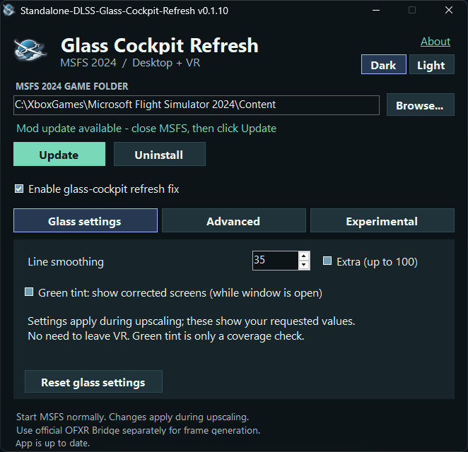

MSFS 2024 · Desktop + VR
Glass Cockpit Refresh
The standalone package for IFreemz’s glass-cockpit refresh fix, with its ReShade components included. Help reduce instrument ghosting with DLSS or FSR upscaling.
Details & download →Tools for your next flight
Two focused tools for MSFS 2024. Bring more clarity to your instruments, or bring your flight data into OBS.

The standalone package for IFreemz’s glass-cockpit refresh fix, with its ReShade components included. Help reduce instrument ghosting with DLSS or FSR upscaling.
Details & download →
Select glider telemetry for OBS text files or a compact capture panel. Configure units and gauges, with aircraft reference limits, automatic reconnect and Dark/Light themes.
Details & download →Windows x64. Each tool has its own setup instructions and requirements. Screenshots show the applications’ control windows. The feeder displays clearly labeled sample telemetry.